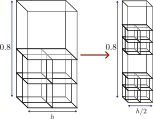

Quick start tutorial 1¶
Introduction¶
This quick start tutorial walks through the steps of running your first AMPSSIE problem. The problem is a convergence analysis of a column deforming under self-weight. It is a simple problem that runs quickly and uses nearly all aspects of the code, apart from contact and rigid body interactions.
The convergence of the implicit Generlised Interpolation Materail Point Method (iGIMPM) was first demonstrated by Charlton \emph{et al.} 1 on the 1D self-weight column, it is used to validate the material point code with a background mesh with hanging nodes against an analytical solution.
By the end of this tutorial, you will have:
- Set up the input .json file
- Run the analysis for a series of problems
- Visualised the results
Problem description¶
You will define the geometry, mesh, boundary conditions, material, and solver in the input file. The values below give you a column that deforms significantly under self-weight. The deformation is large enough that the Generlised Interpolation Material Points (GIMPs) will trasverse several elements and will interact with hanging nodes.

Problem Domain: Set the geometry to a \(h \times h \times 0.8\) m column, i.e. \((x,y,z)\in[0,h]\times[0,h]\times[0,0.8]\) m. Start with \(h = 0.4\) m. For the convergence study you will halve \(h\) at each refinement step (see Figure 1). The element size \(h\) is what you will plot later against the stress error:
where:
- \(\sigma_g = \rho g L\) is the characteristic stress at the bottom of the domain, with \(L = 0.8\) m the column height
- \(V_\Omega = L h^2\) is the total domain volume
- \(\sigma^z(z_p^0) = \rho g (L - z_p)\) is the analytical vertical stress
- \(z_p^0\) is the vertical position of the material point at time \(t = 0\)
- \(V_p\) is the GIMP volume
Material domain: The problem and material domain at \(t=0\) do not normally conincide, however for this problem the GIMPs will be distributed in the volume \(V_\Omega = [0,h]\times[0,h]\times[0,0.8]\) m.
Boundary conditions: Apply roller boundaries on the four sides and the base. Leave the top as a free surface. Fix every node in \(x\) and \(y\) so the problem stays one-dimensional.
Material: Use a Hencky elastic model with constant parameters:
| Parameter | Symbol | Value |
|---|---|---|
| Young's modulus | \(E\) | \(10^3\) Pa |
| Poisson's ratio | \(\nu\) | \(0.0\) |
| Density | \(\rho\) | \(50\) kg/m\(^3\) |
These properties differ slightly from Charlton et al. 1 on purpose — they produce large enough deformation for GIMPs to span elements of different sizes, which is the point of the test.
Loading: Apply gravity as a body force, \(g_i = [0,\,0,\,-9.81]\) m/s\(^2\).
Solver: Use Newton-Raphson and ramp the load on incrementally over 20 load steps.